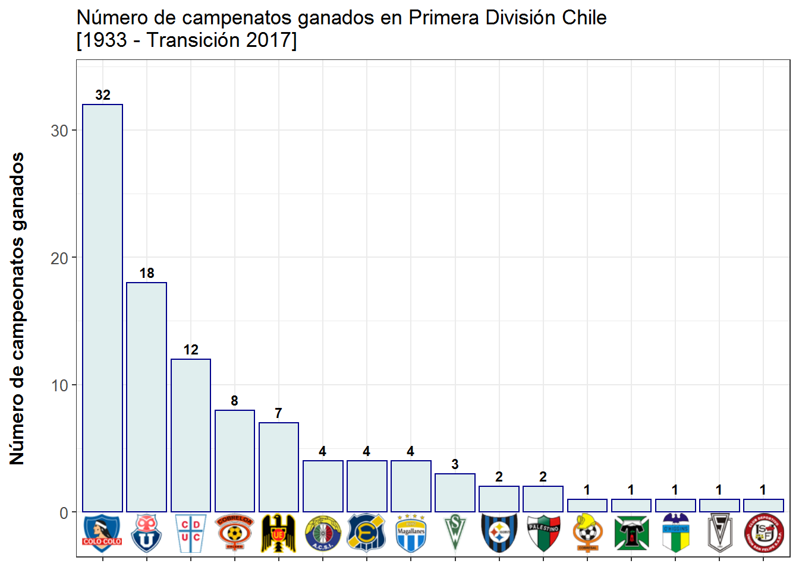
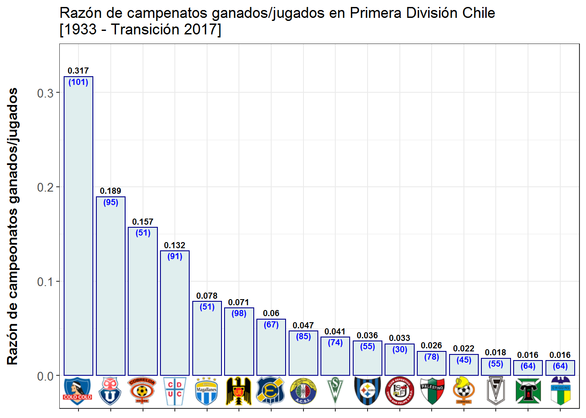

Felicitaciones a Colo-Colo por ser el campeón de la versión N° 101 del torneo de primera división del fútbol profesional chileno (Transición 2017), alcanzando su estrella número 32.
A continuación presentamos la actualización del ranking que publicamos al finalizar el torneo anterior:

Colo-Colo tiene un claro liderato con sus 32 estrellas, con lo que casi le alcanza para duplicar y triplicar a sus más cercanos perseguidores (Universidad de Chile con 18 y Universidad Católica con 12), respectivamente. Cabe destacar que los 3 llamados “equipos grandes” de Chile juntos se han llevado el 61% de las copas jugadas.
Se observa que la mayoría de los campeones son equipos de la Región Metropolitana (Colo-Colo, Universidad de Chile, Universidad Católica, Unión Española, Audax Italiano, Magallanes, Palestino, Santiago Morning y Green Cross), correspondiente al 56% de los 16 equipos que han campeonado al menos una vez, y al 80% de los 101 campeonatos jugados.
Los campeones de otras regiones son:
- Cobreloa (Región de Antofagasta) con 8 campeonatos
- Everton, Santiago Wandereres y Unión San Felipe (Región de Valparaíso) con 4, 3 y 1 campeonato respectivamente
- Huachipato (Región del Bío-Bío) con 2
- O’higgins (Región de Bernardo O’higgins) y Cobresal (Región de Atacama) con 1 estrella cada uno.
El título obtenido por Green Cross en 1945 se consideró para Deportes Temuco (Región de la Araucanía) dada su fusión en 1965.
Ahora bien, también podemos considerar un índice que represente la efectividad para ganar campeonatos en función de los torneos jugados. Así podemos ver cómo cambia el ranking con la razón “campeonatos ganados/jugados” en la siguiente visualización:

Además de la razón campeonatos ganados/jugados que se muestra arriba de cada barra, abajo y entre paréntesis se presenta el número de torneos jugados por cada equipo en Primera División, lo que aporta a la interpretación, puesto que quienes avanzan en este ranking en comparación con al anterior lo hacen debido a que han aprovechado mejor sus participaciones en Primera División para campeonar. Cabe destacar que Colo-Colo es el único que ha jugado los 101 torneos dada su antigüedad en el fútbol criollo y porque no ha descendido nunca a Primera B o Segunda División.
Se puede apreciar que Colo-Colo y Universidad de Chile mantienen sus puestos, con índices de 0.32 y 0.19 respectivamente. Esto puede llevarse a otra palabras como por ejemplo que Colo-Colo tiende a ganar aproximadamente 1 de cada 3 torneos de los que juega, y la U. de Chile lo hace 1 vez cada 5.
Por otro lado, Cobreloa en este ranking supera a la Universidad Católica, quitándole el 3er lugar, así como lo hace Magallanes con Unión Española y Unión San Felipe con Palestino. Premio a la efectividad.
Sin embargo, si bien estos avances en el ranking se deben a mayor efectividad, no hay que dejar de tener presente los números absolutos de los torneos jugados en cada caso, ya que para estos casos justamente se tienen menos participaciones, lo que es debido principalmente a equipos “nuevos” y/o a varios torneos fuera de Primera División.
Lo anterior llevado a un caso extremo: si un equipo sube por primera vez a Primera División y sale campeón inmediatamente, pero al año siguiente desciende, tendría un índice de 0.5 (1 campeonato y 2 torneos jugados) y sería el primero del ranking. Por supuesto que no tendría mucho sentido premiar o alabar eso.
Esperamos mantener este ranking actualizado torneo a torneo e ir agregando estadísticas más detalladas al respecto. Los escudos de los equipos fueron descargados del sitio oficial de la ANFP.